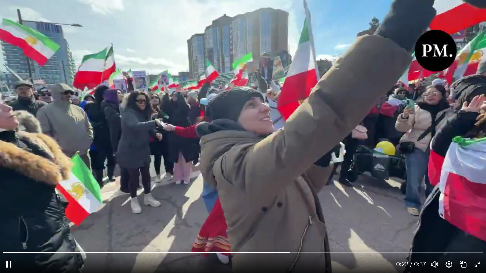

ช่วงเช้าวันนี้ ผู้นำสหรัฐฯประกาศ ว่า คาเมนี่ ผู้นำอิหร่าน ตายแล้ว ปรากฎว่าชาวอิหร่านพากันเฉลิมฉลองใหญ่ ตามถนนหนทาง ในต่างประเทศ แต่เห็นแว่บๆ ว่า ฑูตอิหร่านยังเหมือนปฏิเสธๆ อยู่ แต่นับจากการโจมตีเมื่อวานบ่าย จนถึงขณะนี้ คาเมนี่ยังไม่ปรากฎตัว แสดงตนว่ายังอยู่ เอาว่าประเมินขณะนี้ว่า 99% น่าจะตายจริง ไม่งั้นทรัมป์ไม่น่ากล้าประกาศ แต่ก็รอดูต่อไปอีกสักหน่อย ว่าเรื่องราวจะเป็นไง
ว่ากันว่าการโจมตีเมื่อวานช่วงบ่ายๆ (เวลาไทย) คือประมาณช่วงเช้าของอิหร่าน (ห่างกันน่าจะประมาณ 3 ชั่วโมง) เป็นการวางแผนกันมาหลายเดือน ของอิสราเอลกับสหรัฐฯ ที่เจาะข้อมูลได้ว่าจะมีการประชุมกัน ระหว่างผู้นำอิหร่านกับเจ้าหน้าที่ระดับสูง นายพงนายพลต่างๆ เขาจึงเลือกจะซัด ลงห้องประชุมนั้น เวลานั้นเลย คิดว่า น่าจะตายกันเกลื่อน เพราะเป็นการประชุมใหญ่อยู่ แต่เป็นความลับ แต่สายลับอิสราเอล-สหรัฐ ตามสืบมา และเฝ้ารอเวลานี้มาหลายเดือน คิดว่าจนวินาทีนี้ อิหร่านยังไม่ประกาศความเสียหายเรื่องการถูกโจมตีนี้
ตอนนี้มีข่าวอิหร่านจะปิดช่องแคบเฮอร์มุส อันเป็นช่องทางสำคัญในการขนส่งน้ำมันของโลก อาจกระทบราคาน้ำมันทั่วโลกได้ ใครจะเติมน้ำมันรถ ก็รีบเติมเต็มไว้ก่อนเด้อ
#อิหร่าน #ผู้นำอิหร่านถูกสังหาร
-- Sun Mar 01 2026 10:04:53 GMT+0700 (Indochina Time) @advisor1 postId=MTc3MjMzNDI5MzE0Mg / เผยแพร่ได้แต่ห้ามแก้ไขบิดเบือน